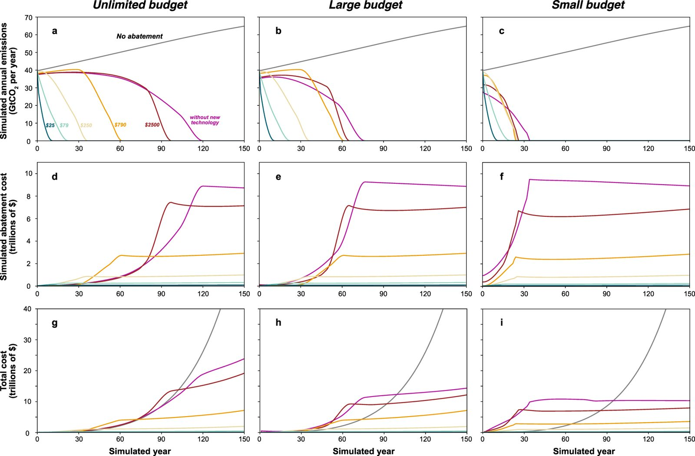
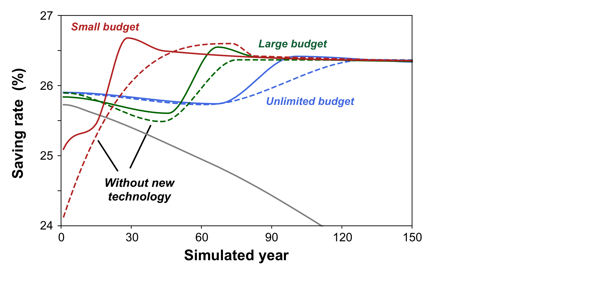
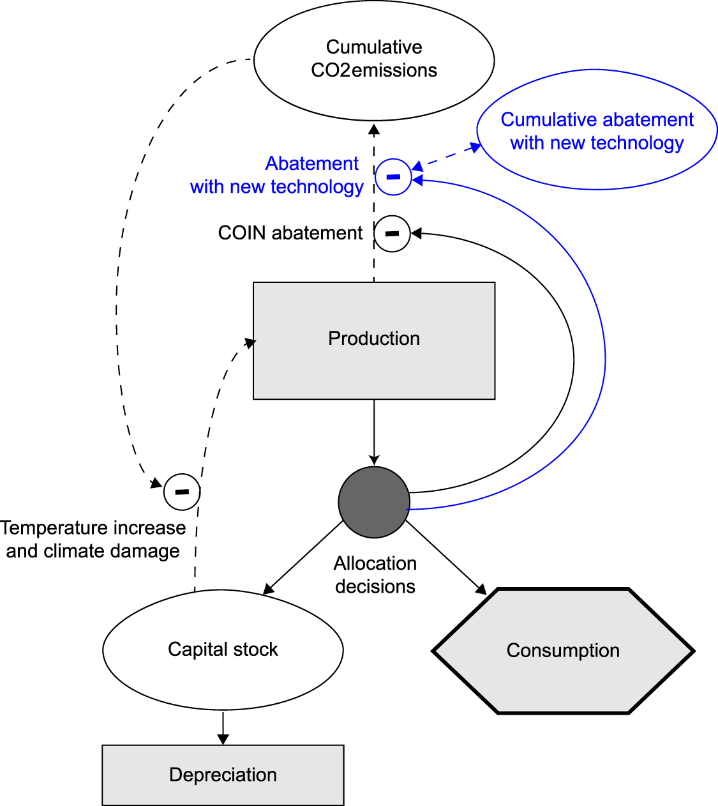

Lei Duan, Juan Moreno-Cruz and I recently published a paper in Environmental Research Letters, titled “The value of reducing the Green Premium: cost-saving innovation, emissions abatement, and climate goals”.
The Green Premium is the difference in cost between a technology that reduces net greenhouse gas emissions and the cost of the currently-used greenhouse gas-emitting technology.
The Abstract of this paper provides a good overall summary of what we did and our findings. In this blog post, I want to highlight a few things that we have found in doing this investigation.
The COIN model
The idea for this model came in the discussion after I gave a talk for University of Waterloo on 3 Dec 2020. We wanted to have a model that was simpler than Nordhaus’s DICE model. We called it the COIN model, laughing that it was simpler than the DICE model — only two sides instead of six.
The COIN model is designed as a tool that can be used to explore conceptual issues, and to teach about climate change economics. It is not intended to produce numerically accurate results.
Among other simplifications, in the COIN model, the amount of warming is proportional to cumulative carbon emissions, climate damage is assumed to scale with the square of temperature change, population is held constant, and total factor productivity is assumed to increase exponentially with time.
For this paper, we added a second abatement technology to the COIN model with costs that followed an “experience curve” (also known as a “learning curve”). The optimizer was allowed to choose to invest in the new technology, even when it was more costly than the incumbent technology.
Stringency of carbon constraint
Sometimes people say things like, “We don’t have time to develop new technologies. We just have to deploy the technologies we already have.”
It is certainly true that we need to deploy the technologies that we already have, but it doesn’t follow from that that we should not put effort into developing new technologies or reducing the cost of existing technologies.
The idea that there is not enough time to develop new technologies or improve existing technologies is based on a mistaken notion. We can develop what does not exist while we deploy what does exist.
We found that the value of reducing the Green Premium increases with the stringency of carbon constraint. If we want to ramp down to zero net emissions by year 2050, there is even more value to reducing the Green Premium than if we were to, say, ramp down to zero net emissions by year 2100.
Rapidly decreasing emissions requires building a lot of costly infrastructure. Because of the way returns on investments and economic discounting work, you would need to invest more today to build something in year 2050 than you would to build the same thing in year 2100. If we have more ambitious climate goals, it becomes even more valuable to reduce technology costs.

Costs don’t stop when we reach net-zero emissions
In Figure 3 (above), the middle row of panels is the cost of emissions abatement. Columns are different levels of abatement stringency. Note that the cost of emissions abatement remains high in these simulations, even after all emissions are eliminated.
Sometimes people act like all of the cost of zero net emissions is in the transition to zero net emissions, but to maintain zero net emissions can also be costly if we do not have low-cost technologies available to help us avoid emissions.
One of the key benefits of reducing the Green Premium is to reduce costs after we have already achieved net zero emissions.

Do investments in emission reduction come from current consumption or from other capital investment?
I didn’t know the answer to the title of this section. If investment in mitigation cannibalized other forms of capital investment this could slow economic growth, yielding knock-on costs to the economy.
A basic insight is that if you think the world is going to end tomorrow, there is little incentive to invest in the future.
However, in our model, investing in emissions reduction produces a better future, with less climate damage. This is especially true as the Green Premium is decreased.
Climate damage, and the cost of mitigation, can be thought of as akin to taxes, and expectation of lower future taxes provides an incentive for increased investment.
Thus, in our model, the capital for investment in mitigation comes from current consumption. In contrast, investment in other forms of capital (the “savings rate”) increases relative to the “no mitigation” case.

Learning subsidies
The COIN model uses an optimizer to determine the optimal partitioning of resources between consumption, capital investment, investment in abatement using the incumbent mitigation technologies (“COIN abatement”), and investment in abatement with a new technology with costs that decline following an “experience curve” (also known as a “learning curve”).
In Nordhaus’s DICE model, the marginal cost of abatement is equal to the marginal net-present-value of climate damage avoided. However, we find that in nearly all cases considered, the optimizer is willing to pay more for the new technology, because there is value in driving the new technology down the learning curve. This additional investment in the more costly technology is known as the “learning subsidy” (or “learning investment”).
We found it very interesting that the optimizer, in nearly all cases, was willing to pay a learning subsidy to help drive the new technology down the learning curve. This suggests that subsidies for new clean technologies can be an economically efficient way to produce a better future.
Summary
We have developed an extremely simple model, the COIN model, to investigate conceptual issues related to the economics of climate change mitigation in general, and the value of decreasing the Green Premium in particular.
We have found that there is substantial value in reducing the Green Premium, and the more stringent the climate goals, the greater the value of decreasing the Green Premium.
“Carbon-emitting technologies often cost less than carbon-emission-free alternatives; this difference in cost is known as the Green Premium.”
In our simulations, much of the value of developing cheaper abatement technologies accrued after net-zero targets were reached. Decreasing Green Premiums not only makes it easier to get to net-zero, it makes it cheaper to stay there.
In nearly every case considered, the optimizer chose to invest in a learning subsidy to bring down the cost of the new technology, even as it allocated substantial resources to deploy existing technologies. This suggests that it can be economically efficient to subsidize new technologies that are proceeding down a learning curve.
In our simulations, investment in emissions abatement induced higher rates of capital investment in other parts of the economy. Decreased costs of emissions abatement and climate damage are akin to expectations of lower future taxes, and expectations of lower future taxes, in an efficient economy, induce increased capital investment.
Lastly, I would like to close with a bit of homage to simple conceptual models. We do not pretend that our model provides reliable numerical results, but we do believe that our model provides conceptual insight that is applicable to the real world.
Reducing the Green Premium can contribute to achieving climate goals, and helps us to develop a better future.
Where to read more
- The publication this post is about: The value of reducing the Green Premium — cost-saving innovation, emissions abatement, and climate goals (Caldeira et al., 2023 · Environmental Research Letters)
- Published article (doi:10.1088/1748-9326/acf949)
- If cutting emissions pays for itself, why is it so hard to do?